|
Pole powierzchni całkowitej stożka o promieniu podstawy r i tworzącej długości l wyraża się wzorem: gdzie Pp jest polem powierzchni podstawy stożka, a Pb jest polem powierzchni bocznej tego stożka. |
|
Objętość stożka o promieniu podstawy r i wysokości długości h wyraża się wzorem: gdzie Pp jest polem powierzchni podstawy stożka. |
Podany w treści zadania trójkąt obracamy wokół boku AB i otrzymujemy pewną bryłę.
a)
Rysunek:
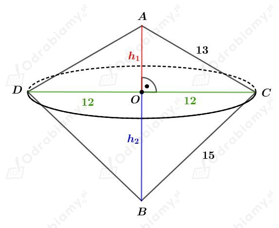
Korzystając z twierdzenia Pitagorasa dla trójkąta AOC mamy:
Korzystając z twierdzenia Pitagorasa dla trójkąta BOC mamy:
Wyznaczmy pole powierzchni bocznej górnego stożka. Mamy:
Wyznaczmy pole powierzchni bocznej dolnego stożka. Mamy:
Wyznaczmy pole powierzchni tej bryły. Mamy:
Wyznaczmy objętość górnego stożka. Mamy:
Wyznaczmy objętość dolnego stożka. Mamy:
Wyznaczmy objętość tej bryły. Mamy:
b)
Rysunek:
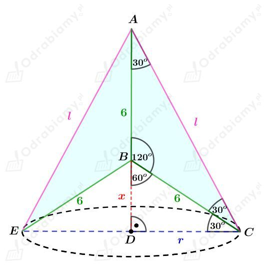
Korzystając ze związku między długościami boków w trójkącie BDC o kątach 30o, 60o, 90o mamy:
oraz
Korzystając ze związku między długościami boków w trójkącie ADC o kątach 30o, 60o, 90o mamy:
Wyznaczmy pole powierzchni bocznej stożka ECA. Mamy:
Wyznaczmy pole powierzchni bocznej stożka ECB. Mamy:
Wyznaczmy pole powierzchni otrzymanej bryły. Mamy:
Wyznaczmy objętość stożka ECA. Mamy:
Wyznaczmy objętość stożka ECB. Mamy:
Wyznaczmy objętość otrzymanej bryły. Mamy:
c)
Rysunek:
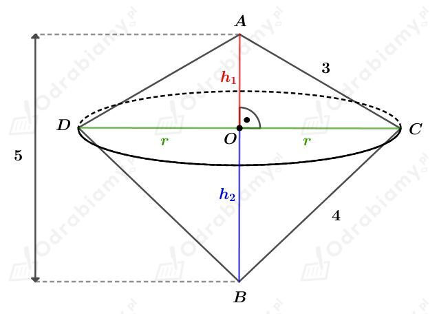
Zauważmy, że
zatem na mocy twierdzenia odwrotnego do twierdzenia Pitagorasa, trójkąt ABC jest prostokątny.
Odcinek OC jest długością wysokości trójkąta prostokątnego opuszczoną na przeciwprostokątną. Mamy więc:
Korzystając z twierdzenia Pitagorasa dla trójkąta AOC mamy:
więc
Wyznaczmy pole powierzchni bocznej górnego stożka. Mamy:
Wyznaczmy pole powierzchni bocznej dolnego stożka. Mamy:
Wyznaczmy pole powierzchni tej bryły. Mamy:
Wyznaczmy objętość górnego stożka. Mamy:
Wyznaczmy objętość dolnego stożka. Mamy:
Wyznaczmy objętość tej bryły. Mamy:
| Pole powierzchni całkowitej stożka o promieniu podstawy r i tworzącej długości l wyraża się wzorem: gdzie Pp jest polem powierzchni podstawy stożka, a Pb jest polem powierzchni bocznej tego stożka. |
Rysunek:
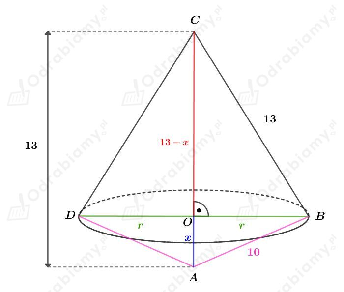
Korzystając z twierdzenia Pitagorasa dla trójkąta ABO otrzymujemy:
Korzystając z twierdzenia Pitagorasa dla trójkąta OBC otrzymujemy:
Czyli
Obliczmy pole powierzchni górnego stożka. Mamy:
Obliczmy pole powierzchni dolnego stożka. Mamy:
Obliczmy pole powierzchni otrzymanej bryły. Mamy:
Dwa stożki złączono podstawami o polu 16𝜋 cm2 i otrzymano bryłę, której przekrój jest deltoidem.
Niech r będzie długością promienia tej podstawy. Mamy więc:
Naszkicujmy deltoid będący przekrojem tej bryły:
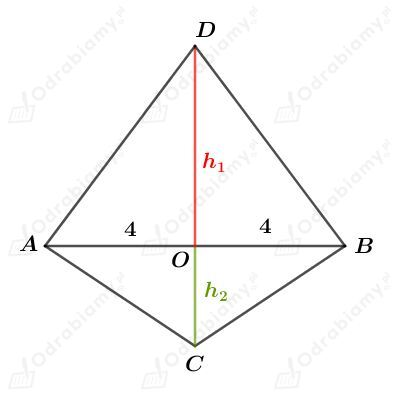
Pole tego przekroju wynosi 60 cm2. Mamy więc
a)
Wyznaczmy objętość tej bryły jako sumę objętości stożka "dolnego" i "górnego". Mamy:
b)
Rysunek:
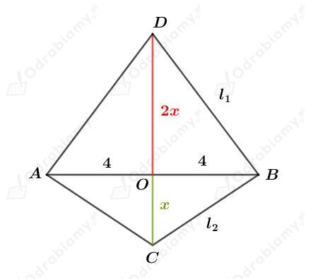
Zauważmy, że
więc
Wyznaczmy długość tworzącej górnego stożka. Korzystając z twierdzenia Pitagorasa dla trójkąta COB mamy:
Wyznaczmy pole powierzchni bocznej tego stożka. Mamy:
Wyznaczmy długość tworzącej dolnego stożka. Korzystając z twierdzenia Pitagorasa dla trójkąta COB mamy:
Wyznaczmy pole powierzchni bocznej tego stożka. Mamy:
Wyznaczmy pole powierzchni tej bryły. Mamy:
| Pole powierzchni całkowitej stożka o promieniu podstawy r i tworzącej długości l wyraża się wzorem: gdzie Pp jest polem powierzchni podstawy stożka, a Pb jest polem powierzchni bocznej tego stożka. |
Rysunek:
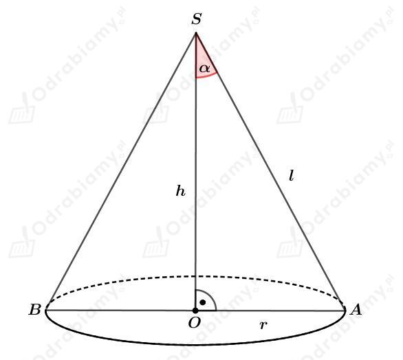
Wyznaczmy pole powierzchni podstawy tego stożka. Mamy:
Wyznaczmy pole powierzchni podstawy tego stożka. Mamy:
Wyznaczmy stosunek tych pól. Mamy:
co kończy dowód.
a)
Rysunek:
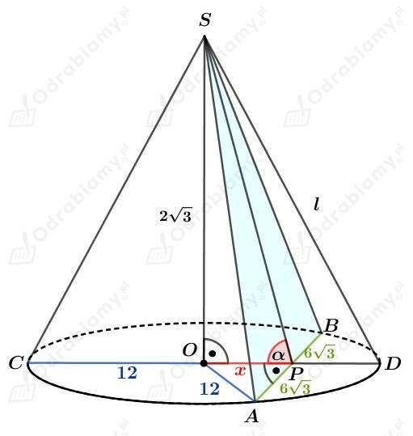
Korzystając z twierdzenia Pitagorasa dla trójkąta APO mamy:
Wyznaczmy tangens kąta 𝛼. Mamy:
więc
b)
Rysunek:
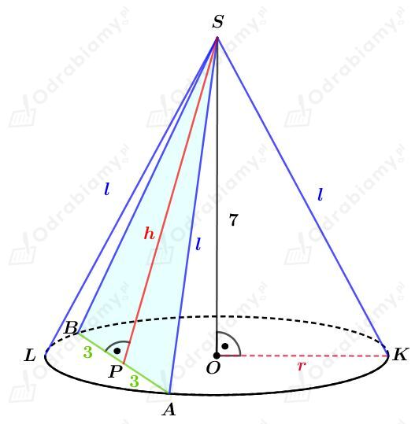
W koło będące podstawą tego stożka wpisano kwadrat o boku długości 6. Promień tego koła stanowi połowę przekątnej tego kwadratu. Mamy więc:
Korzystając z twierdzenia Pitagorasa dla trójkąta OKS mamy:
Korzystając z twierdzenia Pitagorasa dla trójkąta PAS mamy:
Wyznaczmy pole trójkąta BAS. Mamy:
Rysunek:
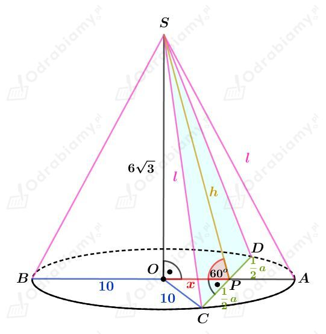
Korzystając ze związku między długościami boków w trójkącie o kątach 30o, 60o, 90o mamy:
oraz
Korzystając z twierdzenia Pitagorasa dla trójkąta OAS mamy:
Korzystając z twierdzenia Pitagorasa dla trójkąta CPS mamy:
Wyznaczmy pole trójkąta CDS. Mamy:
Stożek przecięto płaszczyzną prostopadłą do jego wysokości i otrzymano dwie bryły - mniejszy stożek i stożek ścięty.
Naszkicujmy przekrój osiowy tego stożka. Mamy:
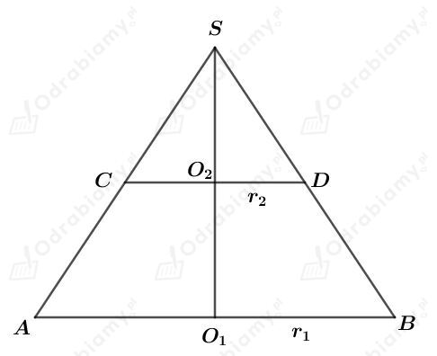
a)
Wiemy, że
Korzystając z podobieństwa trójkątów SO2D oraz SO1B mamy:
zatem
Wyznaczmy objętość stożka ABS. Mamy:
Wyznaczmy objętość mniejszego stożka CDS. Mamy:
Wyznaczmy objętość stożka ściętego. Mamy:
b)
Wiemy, że
Rozważmy trójkąt prostokątny równoramienny ABS. Zatem trójkąt AO1S jest również trójkątem prostokątnym równoramiennym, więc
Rozważmy trójkąt prostokątny równoramienny CDS. Zatem trójkąt CO2S jest również trójkątem prostokątnym równoramiennym, więc
Wyznaczmy objętość stożka ABS. Mamy:
Wyznaczmy objętość mniejszego stożka CDS. Mamy:
Wyznaczmy objętość stożka ściętego. Mamy: